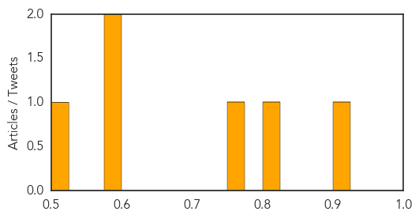
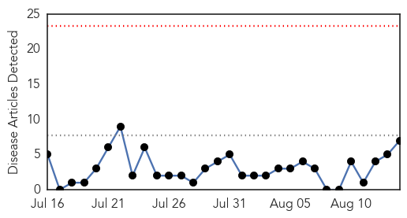
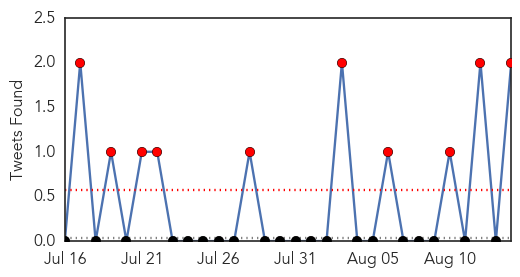

Influenza
30-Day Web Trend
0 alerts, 0 warnings

30-Day Twitter Trend
1 alerts, 0 warnings

Article Locations

Article Confidences
Top Articles:
- 0.909
- Northern Kentucky veterinary clinic reports case of dog flu
- 0.809
- More cases of dog flu confirmed in Cincinnati
- 0.751
- August 13, 2015 Archives
- 0.600
- More than 30 doses of bioCSL Fluvax given to young children despite health authority warnings
- 0.590
- Forty-one children from a roll of 60 off sick
- 0.516
- Malaria Vaccine Effective in Latest Trials
Top Tweets:
-
No tweets found for Aug 14, 2015
Cholera
30-Day Web Trend
0 alerts, 0 warnings

30-Day Twitter Trend
1 alerts, 0 warnings

Article Locations

Article Confidences

Top Articles:
- 1.000
- 29 cases of cholera confirmed in city
- 1.000
- My Republica
- 0.996
- South Sudan: UN health agency ramps up efforts to tackle cholera outbreak
- 0.996
- South Sudan: UN health agency ramps up efforts to tackle cholera outbreak
- 0.980
- NEPAL Cholera epidemic in Kathmandu: Doctors ban government distributed drinking water
- 0.932
- Progress in South Sudan in fight against cholera
- 0.566
- ICRC mobile surgical teams: Bringing emergency medical care across South Sudan
Top Tweets:
- 0.551
- RT: BGlobe editors: "the UN has been tone deaf to international appeals" on Haiti cholera! - must "step up/apologize" http…
- 0.506
- RT: BGlobe editors urge UN "set a high-level example..correct mistakes [&] work with theworld community" on Haiti cholera …